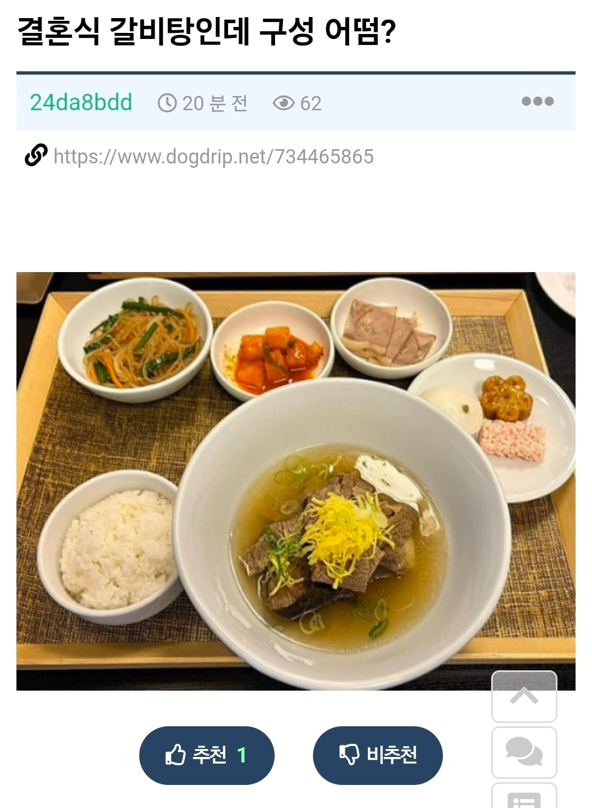

익판에서 욕먹고 있는 결혼식 갈비탕 구성
댓글
ㄹㅇ 이정도면 이야 여기는 한식으로 나오네 정갈하네 소리나옴 ㄹㅇ
예전에 명동 현백 본점 앞에 식장갓는데 갈비탕 하나 주더라 어렷을때엿는데 먼가 굉장히 실망햇던 기억이 잇음
그냥 대충 돈쓴다고 생각하고 감
저렇게 나오는건 이해할 수 있는데 저래놓고 축의금 10만원 이상씩 받아쳐먹으면 속터지긴할듯
축의금 얼마 이상 주세요 한것도 아닐텐데 왜?
밥먹으러 결혼식 가나,,,
뭐 그런 결혼식도 없는 건 아니겠지만
밥이 주가 되는 결혼식은 잘 없잖아
누칼협? 아니 뭐 축하하는 마음으로 주는거 아니었어? ㅋㅋ
삼만원받아도 그러련히해라
저 정도면 장례식장 수준 아닌가? 물론 장례식장은 갈비탕이 아니라 육개장이지만
국물 양도 너무 적도 반찬도 적으,ㅁ
갈비탕 주는 결혼식 한번 가봤는데 엄청 푸짐하게 나오던데 저건 일반 식당에서 주는 거 아닌가?
결혼식인데 뷔페 아니면 가지도 않음
뭐.... 축하해주러 간거니 그냥 그러려니하고 먹고 나올 듯 ㅋㅋ
이건 좀
내가먹은 결혼식 갈비탕은 뚝배기에 전복낚지 올라가있고, 불고기, 모듬전, 나물, 김치, 한과, 과일 등이 나왔는데
저건좀...
시발 이건 아니지 시간내고 돈도 쓰는 손님들한테 대접이 이러면 안되지
결혼식 갈비탕 제대로 된 곳이면 갈비탕이 훨씬 낫다
뷔페... 솔직히 진짜 별로임 사람많고 혼잡하고;
좋은마음으로 축하해주러 가는거지만 좀 그렇네... 끽 해봐야 전문점 14000원 세팅일것 같은데..
커뮤에선 다들 갈비탕이 좋아! 하지만
제대로 된 갈비탕 줘도 현실에선 다들 욕함 ㅋㅋ
ㅋㅋㅋ
딱깔끔 한거같은데
그냥 답례품 받고 나옴
갈비찜이라도 추가해라
유독 없는 애들이 먹는걸로 지랄하더라ㅋㅋ깔끔하기만 한데
갈비탕 먹어봤었는데 쟁반 빈자리없음 꽉채워서 나옴
https://www.munhwa.com/article/11527174
결혼식 갈비탕 보통 이렇게 나옴
저건 보는사람들 개빡치라고 어디 구내식당 찍어서 올린듯